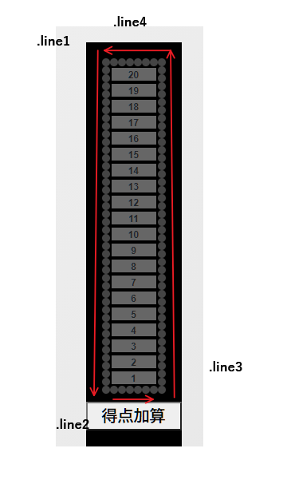

仮装大賞スコアボード風
view source code動作
得点加算ボタンを押すと得点が1点ずつ加算され、現在得点のランプが点灯します。
得点が15点を超えると、ボードの周りのランプがくるくる点灯し、合格を告げます。
解説
得点表示灯、合格表示灯ともflexbox関連のcssプロパティをうまく利用して作成しています。
得点表示灯
display: flexを指定し、flex-wrap: row-reverseで折り返しを逆順で指定すると、下から上へ積まれるように要素が配置されます。
HTMLの要素としては、得点表示灯は1から順番に積まれているので、$(`.score:nth-child(${score})`)で目的の表示灯にアクセスできます。
点灯・消灯はcssのクラスを付与することで行っています。15点以上は付与するクラスを変えて赤色点灯にしています。
合格表示灯
合格表示灯と呼んでいますが正式名称は不明です。合格すると得点版の周りをぐるぐる点灯するネオンサインみたいなアレのことです。
これも得点表示灯と同じようにflex-wrapの指定で工夫しています。合格表示灯は4つのdiv要素で構成されています。左辺のline1、下辺のline2、右辺のline3、上辺のline4です。flex-wrap指定を使い、
電球を表現するdiv要素が右回りに流れるように配置されるようにしています。
.line3とline.4にflex-wrap: wrap-reverseを指定しています。
電球のアニメーション
次に、電球がくるくる回るような表示はどのように実現すれば良いでしょうか。
もちろん電球そのものが動くわけではなく、一定時間点灯し、一定時間消灯する、というサイクルを繰り返しして表現しています。
しかし、一度に全ての電球が点灯し、一度に消灯すればただの点滅ですので、電球ごとに点灯消灯サイクルを少しずつずらして設定します。
今回は、電球の点灯消灯パターンはアニメーションフレームを使用し、電球6つを1セットとして開始時間を等間隔でずらすことによりぐるぐる電球点灯表示を行います。 なので電球の総数は6の倍数になっています。また、各電球のアニメーション開始をずらした時間の合計とアニメーションが1周する時間を同じにすることでスムーズに電球が回転しているように見えます。
/* 電球のスタイル off時 */
.light{
width: 10px;
height: 10px;
border-radius: 5px;
background-color: #444444;
transition: all 0.08s ease;
}
/* 電球のスタイル on時*/
.on {
animation-name: blink-light;
animation-duration: 180ms;
animation-iteration-count: infinite;
}
/* 電球のアニメーション設定 */
@keyframes blink-light{
0% {
/* 消灯 */
background-color: #000000;
box-shadow: none;
}
90% {
/* 点灯 */
background-color: #FFFF00;
box-shadow: 0px 0px 5px 5px #ffff0080;
}
}
/* 各電球のアニメーション開始をずらす設定 1電球ごとに30msずつずらしている。*/
.light:nth-child(6n){
animation-delay: 0ms;
}
.light:nth-child(6n+1){
animation-delay: 30ms;
}
.light:nth-child(6n+2){
animation-delay: 60ms;
}
.light:nth-child(6n+3){
animation-delay: 90ms;
}
.light:nth-child(6n+4){
animation-delay: 120ms;
}
.light:nth-child(6n+5){
animation-delay: 150ms;
}